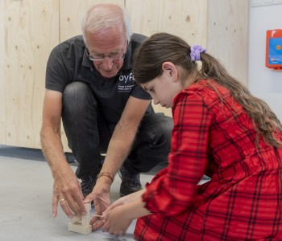
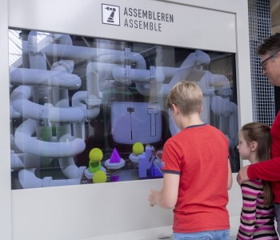
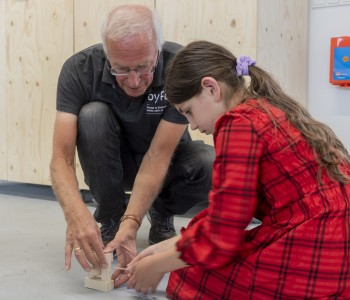
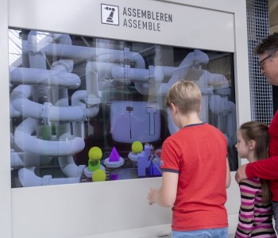

Hieronder een impressie van wat er allemal te doen is in ons museum.
|  |  |
Hieronder een impressie van wat er allemal te doen is in ons museum.
|  |  |
Ik hoop dat je het goed hebt kunnen horen, het is wel een heel bijzonder geluid!